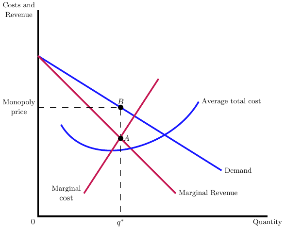
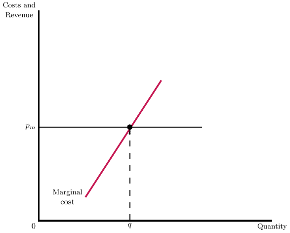

ECON 372 · Economics of Health Care Markets
Emory University
In health care, providers usually face two prices:
How does \(p_{m}\) affect \(p_{n}\)? For now, let’s focus on these two situations separately.
Objective is to maximize some function of profits and quantity of care provided, denoted by \[U\left( \pi_{j} = \pi_{i,j} + \pi_{g,j},D_{i,j}, D_{g,j} \right)\]
where \(\pi_{j}\) denotes total profits for hospital \(j\) and \(D_{i,j}\) denotes hospital demand from insurer \(i\). We assume that \(p_{j}\) is exogenous and determined by a public payer, so the hospital need only set its price for private insurance customers, \(p_{i}\).
The hospital chooses \(p_{i}\) such that
\[\frac{\mathrm{d}U}{\mathrm{d}p_{i}} = U_{1} \pi_{1}^{i} + U_{2} \frac{\mathrm{d}D_{i}}{\mathrm{d}p_{i}}=0\]
where \(U_{1}\) denotes the derivative of \(U(\cdot)\) with respect to its first argument and similarly for \(U_{2}\).
In general, we can’t solve this directly without knowing the hospital’s utility function.

Consider the firm’s demand curve, \(d=16-q\), and cost curve, \(c(q)=5+q^{2}\). Where will the firm produce and at what price? What is the firm’s markup over marginal cost?
The profit function is, \(\pi = (16-q)q - 5 - q^{2}\). Differentiating with respect to quantity yields \(-q + 16 - q - 2q= 16-4q=0\), or \(q=4\). At this quantity, the price is \(p=12\), which is a markup of 4 over the marginal cost (or 50% markup).
Consider the firm’s demand curve, \(d=40-2q\), and cost curve, \(c(q)=5q+\frac{1}{2}q^{2}\).
Sell at the public price to the point where marginal revenue equals marginal cost
